I SEE YOU (ISY)
Multimodal
Deepfake Detection
XAI
Chrome Extension
Selected research and development projects.
I SEE YOU (ISY) is a multimodal platform for checking whether content can be trusted. Most detectors answer one question about one file: is this AI-generated? ISY also asks whether the pieces of a post agree with each other — lips with voice, scene with caption — and always shows why. Detect + Verify + Explain: it returns a review-risk signal with evidence, and a person makes the final call.
Why now: in April 2026 an AI-generated sighting photo of a wolf that escaped a Daejeon zoo widened the search and closed nearby schools, and marketplace scams now forge product photos with generative AI. Korea’s AI Basic Act (Jan. 2026) requires labels on AI output, but labels vanish when content is cropped or re-uploaded. ISY looks at the content itself.
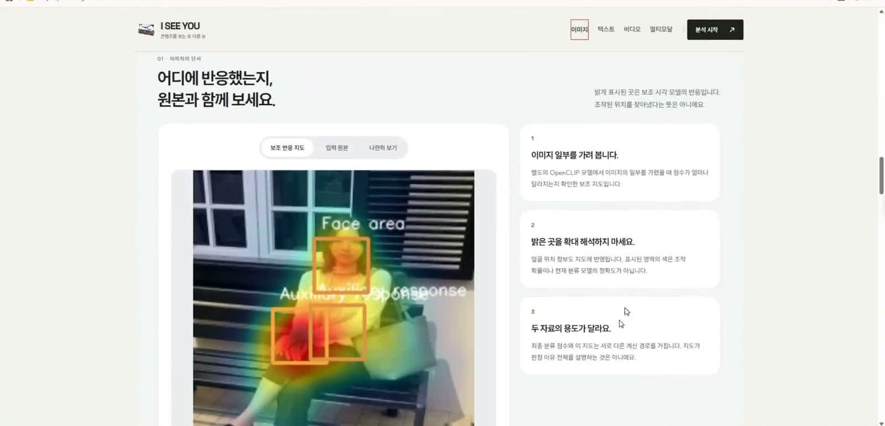
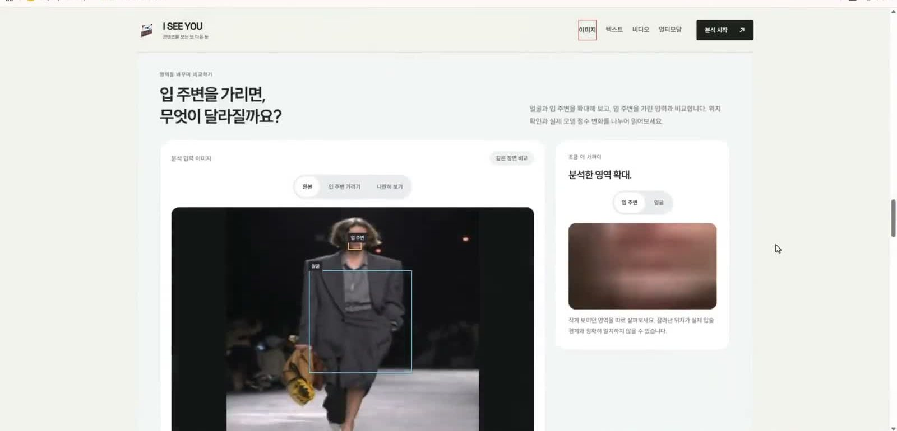
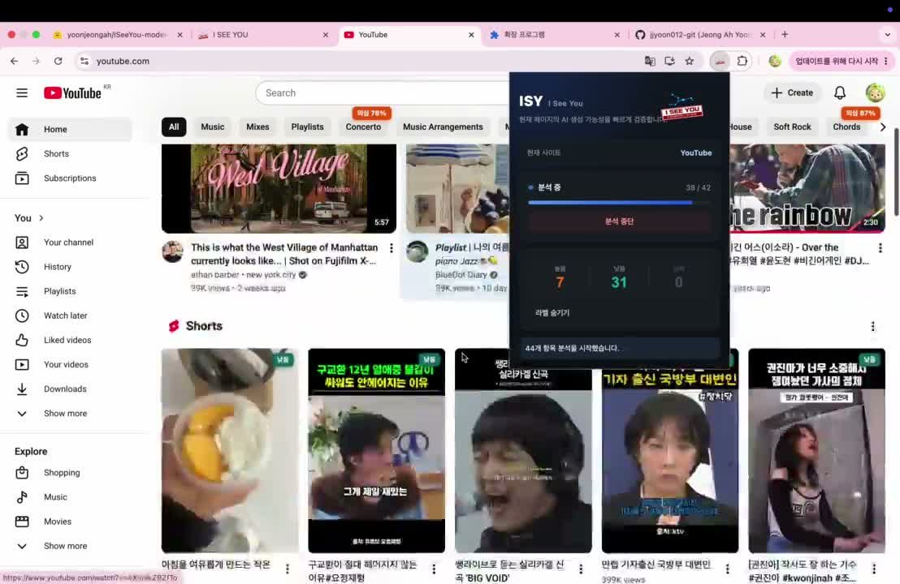
| Module | Evaluation data | ACC | AUC | F1 |
|---|---|---|---|---|
| Image | 2,463 full images · 9,000 faces | 0.946 | 0.987 | 0.946 |
| Video | not reported | 0.755 | 0.830 | 0.755 |
| Text · English | DAIGT-V4 | 0.958 | 0.914 | 0.961 |
| Text · Korean | KatFish (ACL 2025) | 0.842 | 0.921 | 0.892 |
| Multimodal consistency | not reported | 0.890 | 0.957 | 0.885 |
Evaluation-set results from our KIIT 2026 paper, not accuracy in the live service. Video is the weakest module because frame-level classification misses temporal traces — strengthening temporal features is my next task.
Web service · image analysis (64 s): upload, heatmap, masked-mouth comparison, frequency pattern, and a non-generated photo for contrast.
Chrome extension (21 s): analyses every thumbnail on the YouTube home page in place and tallies risk signals per page.
Scores shown are review-risk signals, not verdicts of authenticity.
Team lead and owner of the video-detection module, in a team of nine: two image teams (one also built the Chrome extension), text, multimodal XAI, frontend, extension security, and business, plus beta testers. Advisor: Prof. Jinyoung Lee, Kyonggi University.
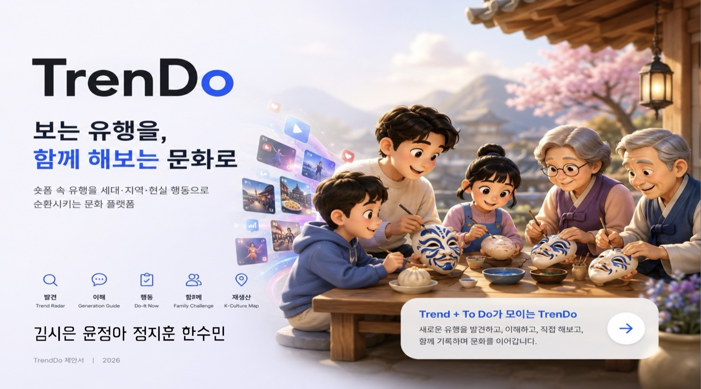
TrendDo is an AI culture-circulation platform that translates trends into the language of each generation — trends that are consumed and forgotten at short-form speed — and converts them into actionable ToDo challenges and local / traditional culture experiences.
"Algorithms make people watch longer, but they don't make culture experienced more deeply." — TrendDo closes that gap with a four-stage loop.
provenance_label=demo_seed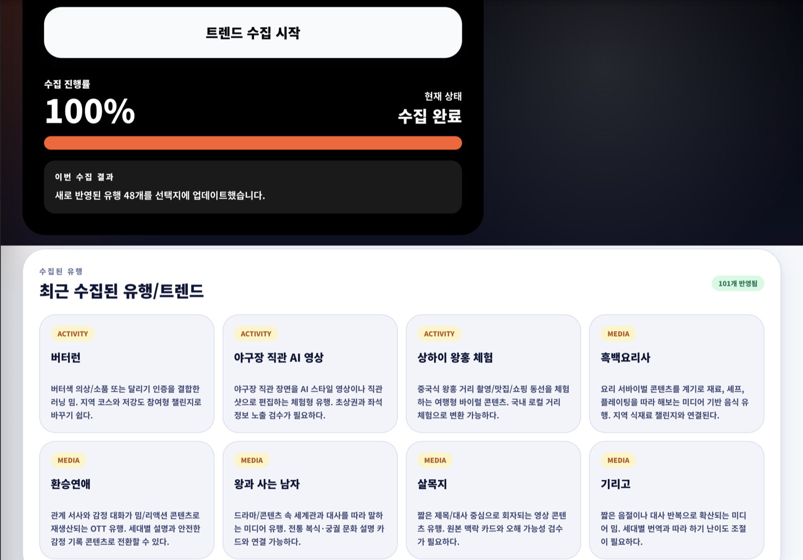
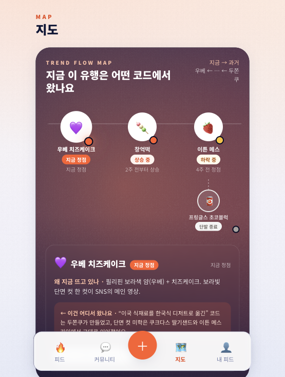
4-person team project — Sieun Kim · Jeongah Yoon · Jihoon Jeong · Sumin Han
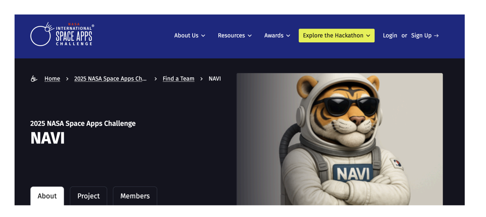
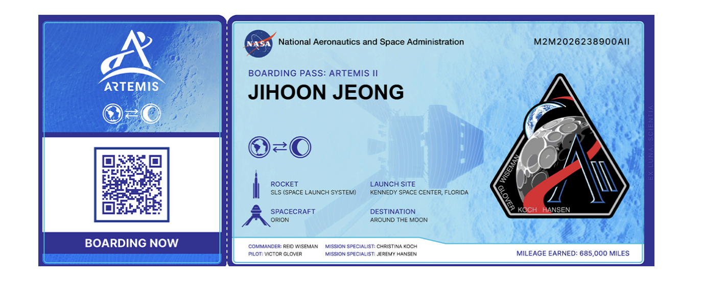
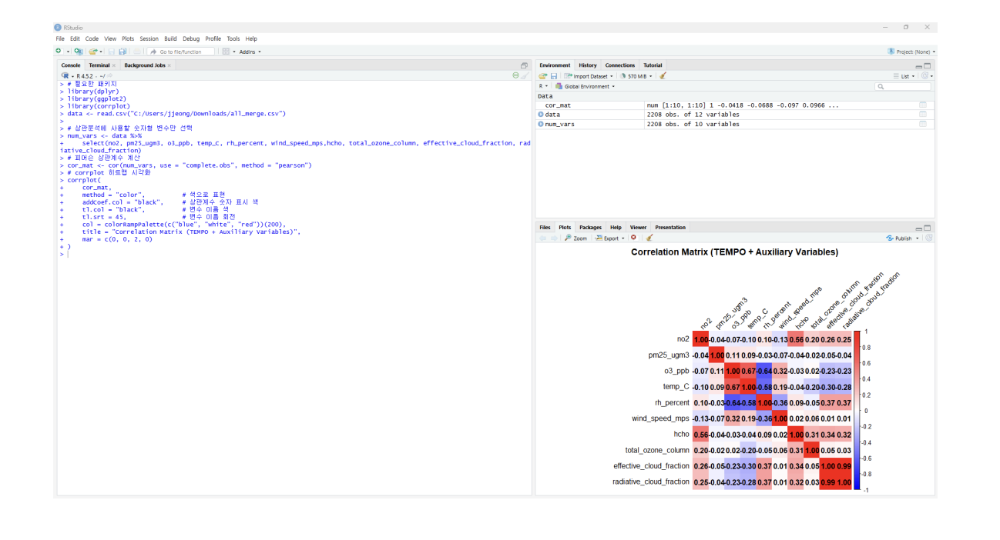
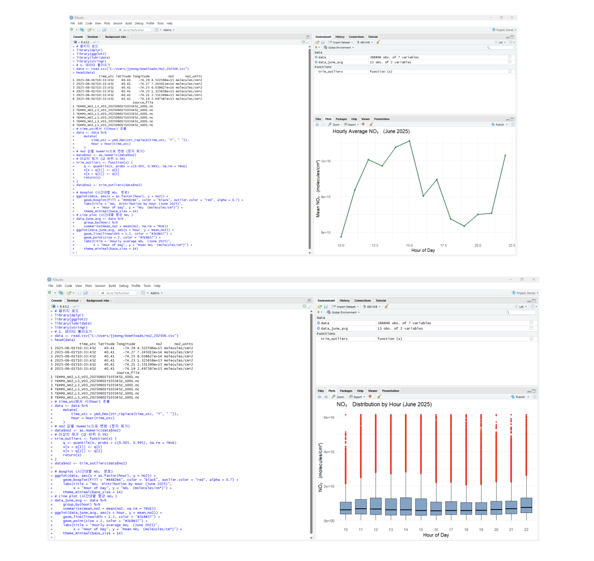
AIRBENDER is an AI-powered air quality forecasting system leveraging NASA TEMPO satellite data to predict ozone levels and provide personalized health recommendations.
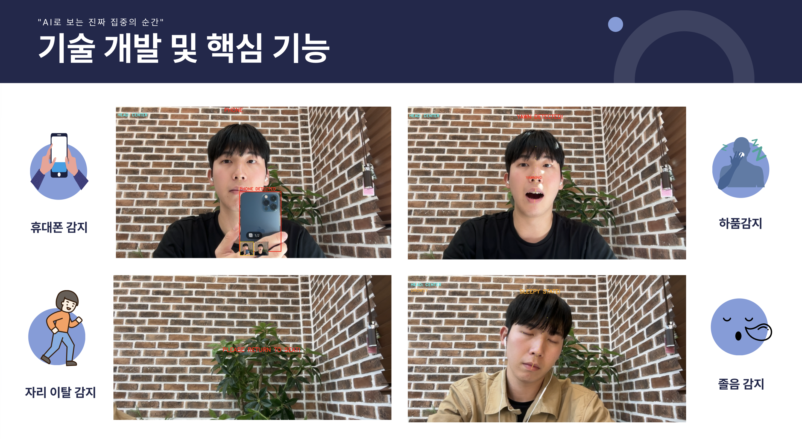
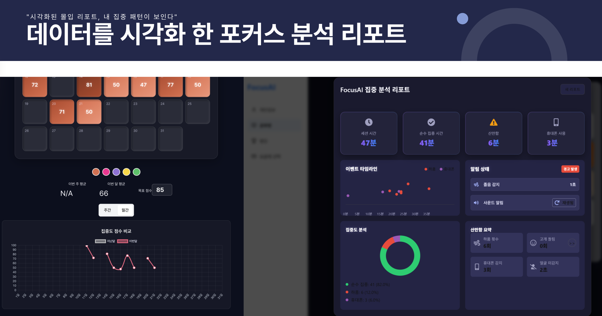
FocusAI analyzes learner concentration in real time by detecting facial expressions and behaviors in intelligent learning environments.
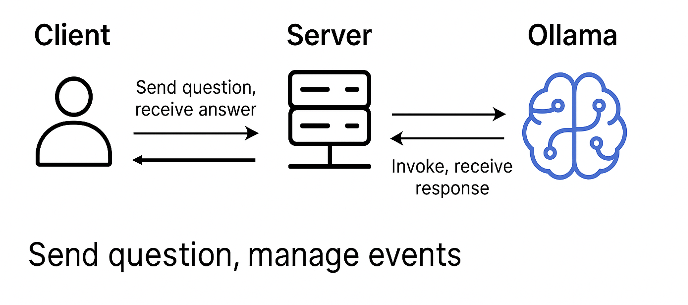
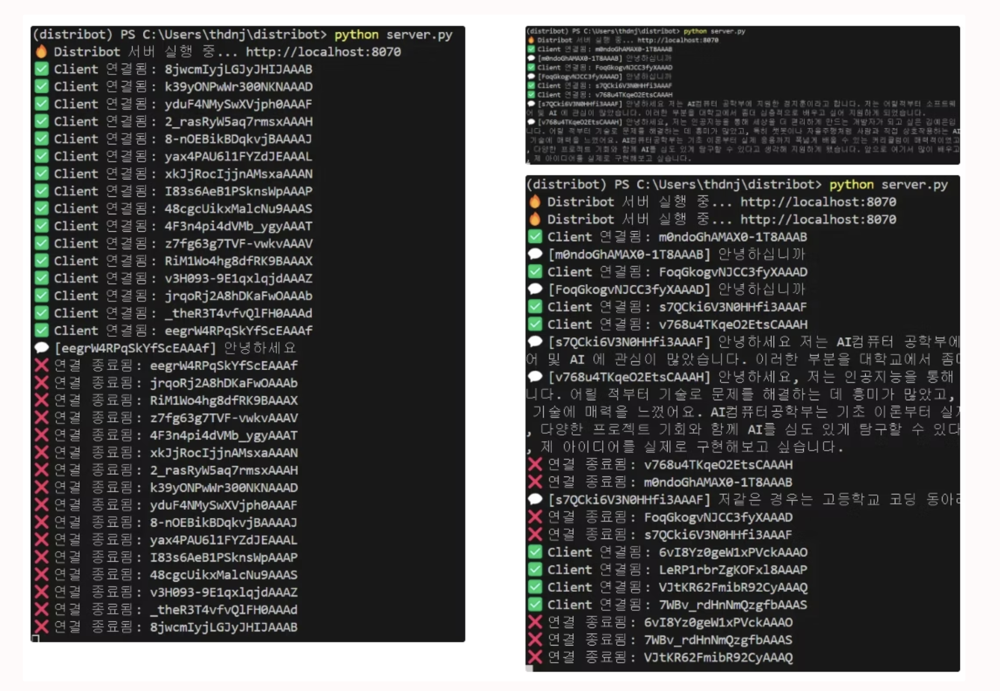
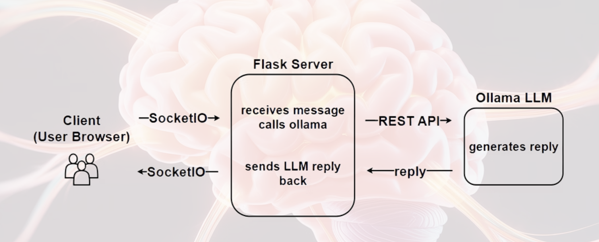
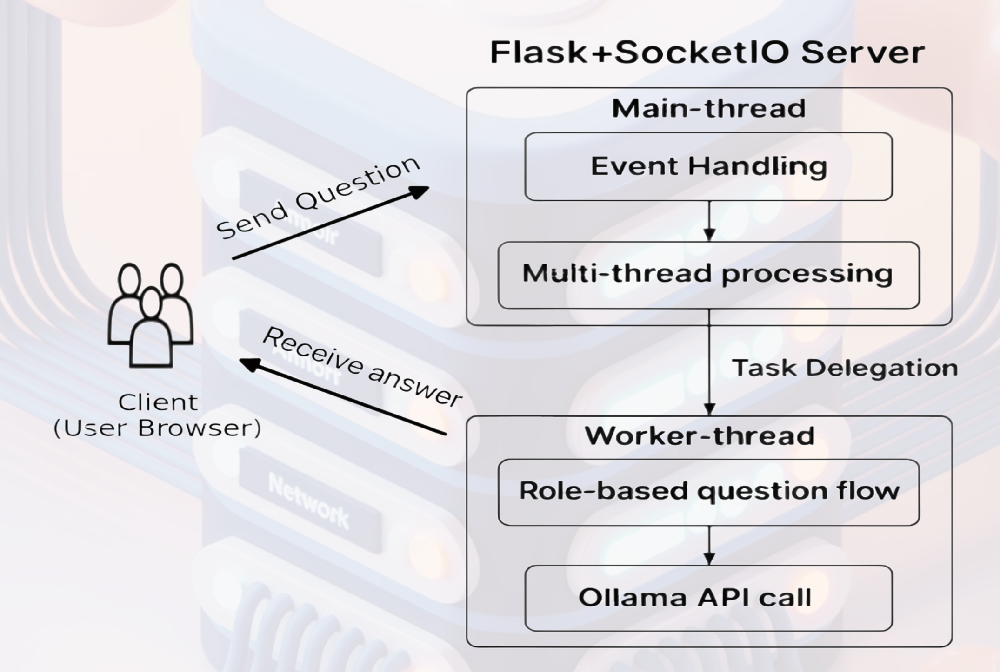
Distribot is a scalable, multi-user interview simulation system powered by large language models.
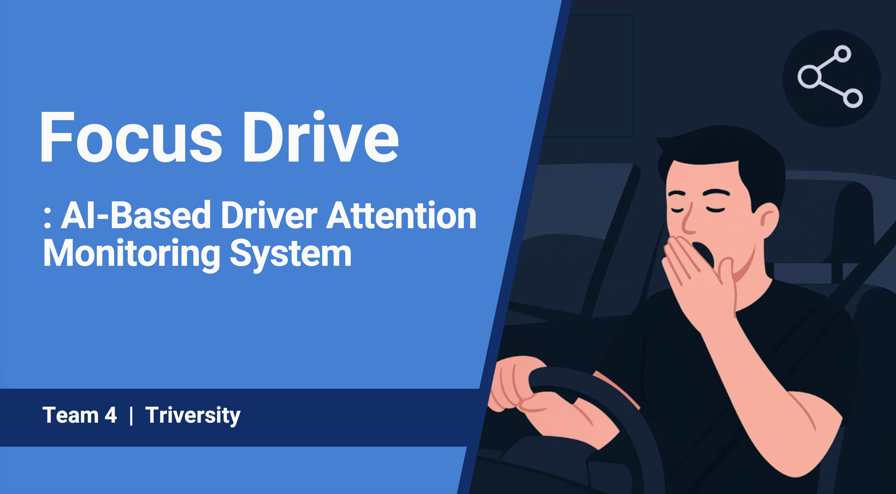
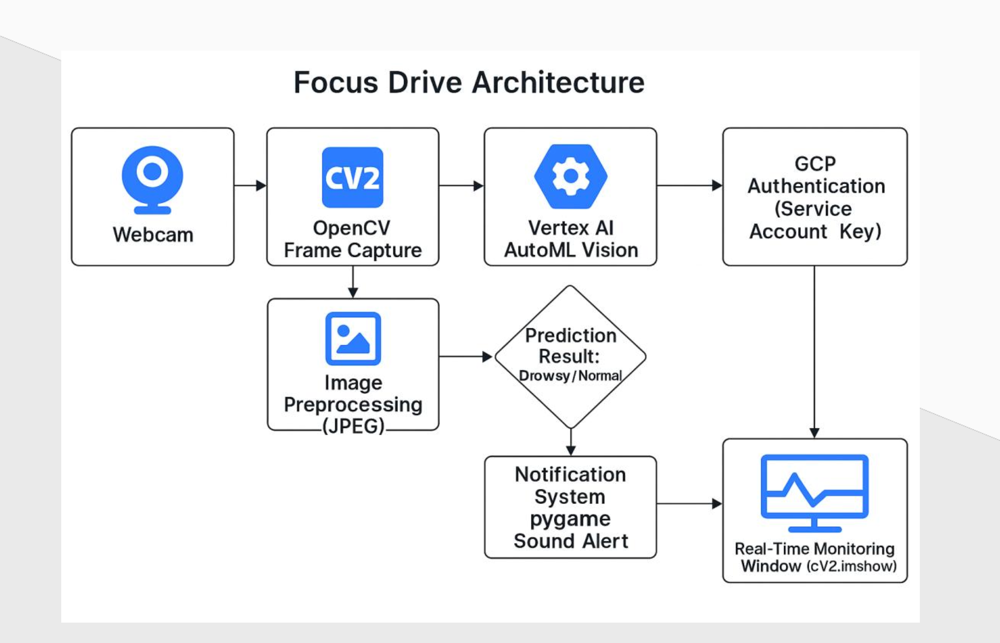
FocusDrive detects driver drowsiness in real time using webcam input and triggers immediate alerts.